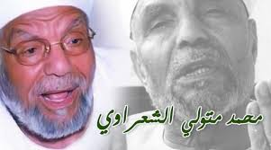

الشيخ محمد متولى الشعراوى
مولده وحياته العلمية
ولد محمد متولي الشعراوي في 15 أبريل عام 1911م بقرية دقادوس مركز ميت غمر بمحافظة الدقهلية بمصر، وحفظ القرآن الكريم في الحادية عشرة من عمره. في عام 1922م التحق بمعهد الزقازيق الابتدائي الأزهري، وأظهر نبوغاً منذ الصغر في حفظه للشعر والمأثور من القول والحكم، ثم حصل على الشهادة الابتدائية الأزهرية سنة 1923م، ودخل المعهد الثانوي الأزهري، وزاد اهتمامه بالشعر والأدب، وحظي بمكانة خاصة بين زملائه، فاختاروه رئيسًا لاتحاد الطلبة، ورئيسًا لجمعية الأدباء بالزقازيق، وكان معه في ذلك الوقت الدكتور محمد عبد المنعم خفاجى، والشاعر طاهر أبو فاشا، والأستاذ خالد محمد خالد والدكتور أحمد هيكل والدكتور حسن جاد، وكانوا يعرضون عليه ما يكتبون. كانت نقطة تحول في حياة الشيخ الشعراوي، عندما أراد والده إلحاقه بالأزهر الشريف بالقاهرة، وكان الشيخ الشعراوي يود أن يبقى مع إخوته لزراعة الأرض، ولكن إصرار الوالد دفعه لاصطحابه إلى القاهرة، ودفع المصروفات وتجهيز المكان للسكن. فما كان منه إلا أن اشترط على والده أن يشتري له كميات من أمهات الكتب في التراث واللغة وعلوم القرآن والتفاسير وكتب الحديث النبوي الشريف، كنوع من التعجيز حتى يرضى والده بعودته إلى القرية. لكن والده فطن إلى تلك الحيلة، واشترى له كل ما طلب قائلاً له: أنا أعلم يا بني أن جميع هذه الكتب ليست مقررة عليك، ولكني آثرت شراءها لتزويدك بها كي تنهل من العلم. وهذا ما قاله فضيلة الشيخ الشعراوي في لقائه مع الصحفي طارق حبيب [بحاجة لمصدر] التحق الشعراوي بكلية اللغة العربية سنة 1937م ، وانشغل بالحركة الوطنية والحركة الأزهرية، فحركة مقاومة المحتلين الإنجليز سنة 1919م اندلعت من الأزهر الشريف، ومن الأزهر خرجت المنشورات التي تعبر عن سخط المصريين ضد الإنجليز المحتلين. ولم يكن معهد الزقازيق بعيدًا عن قلعة الأزهر في القاهرة، فكان يتوجه وزملاءه إلى ساحات الأزهر وأروقته، ويلقي بالخطب مما عرضه للاعتقال أكثر من مرة [بحاجة لمصدر]، وكان وقتها رئيسًا لاتحاد الطلبة سنة 1934م.

أسرة الشعراوي
.jpg)
تزوج محمد متولي الشعراوي وهو في الثانوية بناءً على رغبة والده الذي اختار له زوجته، ووافق الشيخ على اختياره، لينجب ثلاثة أولاد وبنتين، الأولاد: سامي وعبد الرحيم وأحمد، والبنتان فاطمة وصالحة. وكان الشيخ يرى أن أول عوامل نجاح الزواج هو الاختيار والقبول من الطرفين والمحبة بينهما.
المناصب التى تولاها
.jpg)
- عين مدرساً بمعهد طنطا الأزهري وعمل به، ثم نقل إلى معهد الإسكندرية، ثم معهد الزقازيق
- أعير للعمل بالسعودية سنة 1950م. وعمل مدرساً بكلية الشريعة، بجامعة الملك عبد العزيز بجدة
- عين وكيلاً لمعهد طنطا الأزهري سنة 1960م
- عين مديراً للدعوة الإسلامية بوزارة الأوقاف سنة 1961م
- عين مفتشاً للعلوم العربية بالأزهر الشريف 1962م
- عين مديراً لمكتب الأمام الأكبر شيخ الأزهر حسن مأمون 1964
- عين رئيساً لبعثة الأزهر في الجزائر 1966
- عين أستاذاً زائراً بجامعة الملك عبد العزيز بكلية الشريعة بمكة المكرمة 1970م
- عين رئيس قسم الدراسات العليا بجامعة الملك عبد العزيز 1972م.
- عين وزيراً للأوقاف وشئون الأزهر بجمهورية مصر العربية 1976م
- عين عضواً بمجمع البحوث الإسلامية 1980م
- اختير عضواً بمجلس الشورى بجمهورية مصر العربية 1980م
- عرضت علية مشيخة الأزهر وكذا منصب في عدد من الدول الإسلامية لكنه رفض وقرر التفرغ للدعوة الإسلامية
© 2008-2018 EL-NEHRAWY front-end web designer.All Rights Reserved.